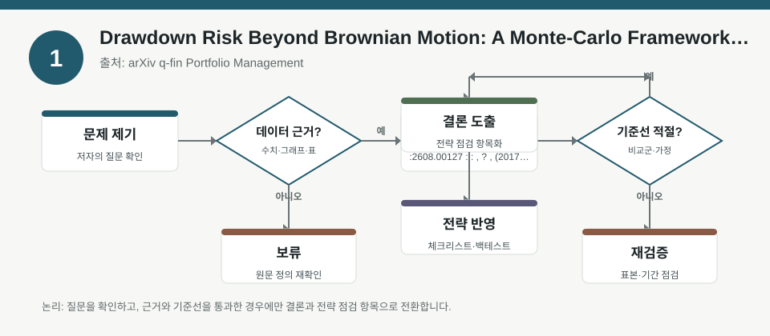
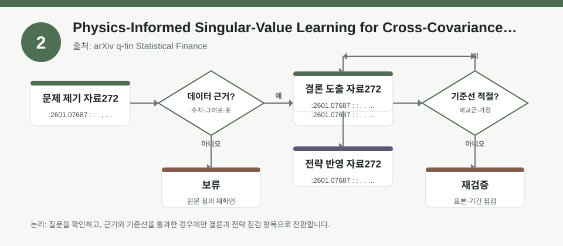
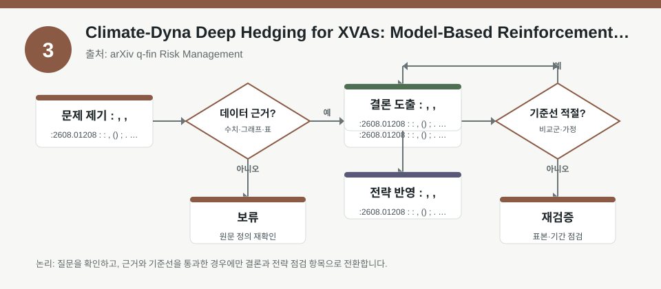

핵심 요약
- 결론: 이번 3개 자료는 모두 “예측”보다 “가정 점검”이 핵심이며, 한국 투자자 관점에서는 KOSPI/KOSDAQ 섹터 노출과 환율·금리·변동성 민감도를 같이 확인하는 쪽이 유리합니다.
- 원칙: 수치가 본문 메타데이터에 없으면 사실로 단정하지 말고, 백테스트 전제·분포 가정·상관구조·헤지 가능성은 검증 항목으로 따로 분리해야 합니다.
주목할 자료
| 번호 | 자료 | 출처 | 원문 | 핵심 내용 | 데이터 포인트 | 리스크/한계 |
|---|---|---|---|---|---|---|
| 1 | Drawdown Risk Beyond Brownian Motion: A Monte-Carlo Framework, Non-Gaussian Extensions, and Long Memory | arXiv q-fin Portfolio Management | 원문 보기 | 드로우다운을 정규분포·브라운운동만으로 보지 않고, 몬테카를로와 비가우시안·장기기억 구조로 해석하는 틀을 제시합니다. | 손실 경로의 꼬리위험, 자기상관, 장기 드로우다운 지속기간 검토 | Sharpe만으로 드로우다운을 설명하기 어렵고, 분포·시계열 가정이 맞는지 확인 필요 |
| 2 | Physics-Informed Singular-Value Learning for Cross-Covariances Forecasting in Financial Markets | arXiv q-fin Statistical Finance | 원문 보기 | 교차공분산 예측에서 물리정보 기반 학습과 특이값 축소를 결합해, 시계열 상관구조를 더 안정적으로 다루려는 접근입니다. | 공분산 추정, 상관행렬 안정화, 요인 간 전이 리스크 검토 | 정상성·유한 스펙트럼 가정이 현실에서 깨질 수 있어, 레짐 전환과 구조변화 확인 필요 |
| 3 | Climate-Dyna Deep Hedging for XVAs: Model-Based Reinforcement Learning, Residual Climate HVA, and Hedge-Instrument Discovery | arXiv q-fin Risk Management | 원문 보기 | 기후 리스크의 잔여 HVA를 헤지 후 남는 비용으로 보고, 강화학습 기반 헤지와 도구 탐색을 연결합니다. | 헤지 후 잔여비용, 기후 스트레스, 헤지 수단 적합성 검토 | 단일 스트레스 손실로 잔여 기후비용을 대체할 수 없고, 사용 가능한 헤지수단 제약이 큼 |
자료별 상세
1. Drawdown Risk Beyond Brownian Motion: A Monte-Carlo Framework, Non-Gaussian Extensions, and Long Memory

- 핵심: 드로우다운은 평균수익률보다 경로 의존성이 중요하므로, 손실 폭과 회복 기간을 함께 보는 구조가 필요합니다.
- 데이터 포인트: 몬테카를로 시뮬레이션과 비가우시안 분포, 장기기억을 통해 전략의 최대낙폭과 낙폭 지속성을 점검합니다.
- 리스크: 브라운운동 가정이 깨지면 낙폭 추정이 과소평가될 수 있어, 꼬리위험과 자기상관 가정을 별도 검증해야 합니다.
- 투자전략 반영 예시: KOSPI 성장주·KOSDAQ 고변동 섹터처럼 변동성이 큰 포지션은, 환율·금리 충격까지 넣은 경로 기반 스트레스 체크리스트로 점검할 수 있습니다.
- 실행 예시: 최근 3개 레짐에서 동일 전략의 월별 손익 경로를 나눠 최대낙폭, 회복기간, 연속손실 길이를 비교해 기록합니다.
2. Physics-Informed Singular-Value Learning for Cross-Covariances Forecasting in Financial Markets

- 핵심: 공분산 예측은 단순 상관계수보다 포트폴리오 분산과 요인 분해에 직접 연결되므로, 노이즈를 줄이는 추정 안정성이 중요합니다.
- 데이터 포인트: 특이값 축소와 물리정보 기반 제약으로 교차공분산을 추정해, 섹터·스타일·국가 간 연동 구조를 더 안정적으로 보려는 접근입니다.
- 리스크: 정상성, bounded-spectrum 가정, 과거 상관구조의 지속성이 현실에서 흔들릴 수 있어 검증이 필요합니다.
- 투자전략 반영 예시: 한국 투자자는 반도체·2차전지·인터넷 등 KOSPI/KOSDAQ 섹터 간 상관이 급변하는 구간을 따로 표시해 분산효과가 실제로 유지되는지 확인할 수 있습니다.
- 실행 예시: 60일·120일 롤링 공분산과 축소 추정치를 비교해, 섹터 간 상관이 급등한 구간에서 포트폴리오 기여위험 변화가 어떻게 달라지는지 기록합니다.
3. Climate-Dyna Deep Hedging for XVAs: Model-Based Reinforcement Learning, Residual Climate HVA, and Hedge-Instrument Discovery

- 핵심: 기후 리스크는 “스트레스 손실”과 “헤지 후 잔여비용”이 다를 수 있어, 헤지 가능성과 도구 제약을 함께 봐야 합니다.
- 데이터 포인트: 강화학습 기반 헤지, 잔여 기후 HVA, 헤지수단 탐색이 핵심이며, 단순 시나리오 손실보다 운용 비용 관점이 강조됩니다.
- 리스크: 기후 리스크는 자산 가격뿐 아니라 규제·공급망·보험·전력비용 경로로 전이될 수 있어, 단일 지표로 요약하기 어렵습니다.
- 투자전략 반영 예시: 한국 투자자는 에너지·운송·화학·유틸리티처럼 규제와 탄소비용에 민감한 섹터의 노출을 별도 체크리스트로 분리해 볼 수 있습니다.
- 실행 예시: 보유 종목을 기후 민감 업종과 비민감 업종으로 나누고, 각 그룹에 대해 환율·금리·규제 변화가 동시에 올 때의 잔여 리스크 메모를 남깁니다.
팩터·리스크·포트폴리오 관점
- 핵심: 세 자료 모두 공통적으로 “단일 통계량”보다 경로, 상관구조, 헤지 제약을 중시하므로, 팩터 노출은 베타·모멘텀·변동성·퀄리티뿐 아니라 레짐 전환 민감도로 함께 봐야 합니다.
- 검수: 메타데이터에 구체적 수치가 없으므로, 실제 적용 전에는 표본구간, 분포 가정, 공분산 추정법, 헤지 가능 자산의 제약과 거래비용을 확인해야 합니다.
정리
- 결론: 이번 자료들은 한국 주식 투자자에게 “섹터 선택”보다 “리스크 구조 점검”이 먼저라는 점을 보여줍니다.
- 다음 확인: 백테스트를 볼 때는 최대낙폭, 회복기간, 상관 붕괴 구간, 환율·금리 충격, 규제 변화 반응을 함께 확인해야 합니다.